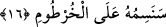

ifâdeyle şöyle denmektedir: Sen ona bizim kelâm-ı kadîmimizin âyetlerini okuduğun
zaman o, “bunlar birer masaldan ibârettir bunları yalandan yere uydurmuşlardır” der.
Nitekim, “Yine onlar dediler ki: Bu âyetler onun başkasına yazdırıp da kendisine
sabah-akşam okunmakta olan öncekilere âid masallardır.” (el-Furkan, 25/5)
Süddî’nin anlayışına göre “esâtîrul evvelîn” demek, “esâciu’l-evvelîn” yâni
öncekilerin secili, kâfiyeli sözleri demektir. Yâni onlar, bizim onlara vermiş olduğumuz
mal ve evlâd nimetine âyetlerimizi inkâr etmekle karşılık verdiler. Müberred der ki:
Nasıl uhdûse kelimesinin çoğulu ahâdîs geliyorsa, esâtîr kelimesi de ustûra kelimesinin
çoğulu olarak gelmiştir. Nitekim bu hususu daha önce bu tefsirimizde pek çok yerde dile
getirdik.
et-Tevilatu’n-necmiyye’ye göre bu âyet-i kerîmenin anlamı şöyledir: Riyâya ve
süm’aya dayalı amel servetleri ve kendini beğenme ve böbürlenmeyle ârızalı hâl
çocukları var diye alabildiğine hakîr ve aşağılık kimseye itâat etme. Ona hakîkatleri ve
ince sırları taşıyan âyetlerimiz okunduğunda, “bunlar öncekilerin masallarıdır; bunlar
geçmiş dönemlerde yaşayan sûfîlerin bâtıl ve hurafe sözleridir” derler.
16. Biz yakında onun burnuna damga vuracağız (kibirini kırıp rezil edeceğiz).
Önce bu âyet-i kerîmede yer alan “senesimuhû” fiilini ele alalım. Bu fiil “vesm”
kelimesinden türemedir. Vesm herhangi birşeyi dağlamak, herhangi bir nesneye işâret
koymak anlamınadır. Aynı kökten yine dağlamak anlamıyla ilintili olarak ütüye “el-
Miysem” denilmiştir.
Şimdi aynı âyette yer alan “el-Hurtûm” kelimesini ele alalım. Arapçada “burnun ön
tarafı” ya da “ağız içinin alt ve üst kısmı” anlamına gelir. Nitekim Kamus’ta kelime bu
şekilde açıklanmaktadır. Buna göre âyete mânâ vermek gerekirse; “Biz, adamakıllı hakîr
ve zelîl olduğu için vücudunun en değerli yerine, orasını dağlamak sûretiyle tanınacak
olduğu bir alâmet ve işâret vuracağız.” Âyette alâmet yeri olarak neden “burun”
kelimesinin seçildiğine gelince, burun yüzde öne doğru bir çıkıntı şeklinde olduğu için
hemen göze çarpan ilk organ olması açısından, insan vücudundaki en önemli ve değerli
yerdir. Bu nedenle araplar burnu izzet, izzet-i nefis yeri olarak görmüşlerdir. Nitekim
sırf bu anlayıştan dolayı, insanın izzet-i nefsine dokunacak şeyi kabul etmemesi
anlamına burun kelimesinden türetilmiş “el-enefetü” kelimesini türetmişlerdir. Yine sırf
bu anlayış nedeniyle arapların dilinde “buruna burun” tâbiri ile “o burnunu korudu”
veya “filancanın burnu büyümüş” deyimleri yer almıştır. Araplar zillete düşmüş olan
bir kişiyi ifâde etmek için yine burun kelimesinin içinde yer aldığı deyimleri
kullanmışlardır. Sözgelimi “burnu kesik, burnu sürtüldü” deyimleri dilde kullanılır
olmuştur.